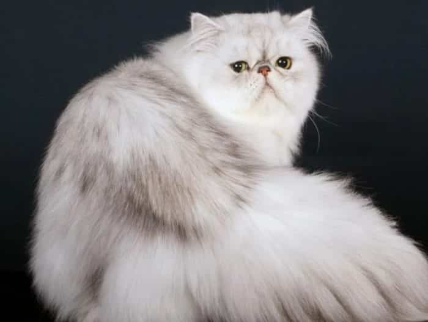
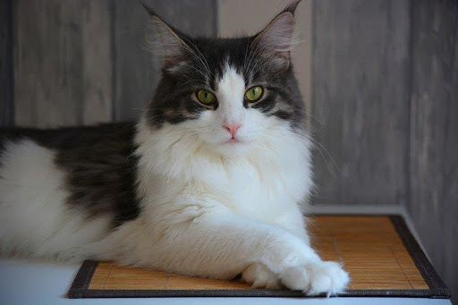
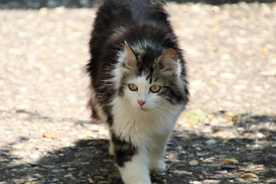
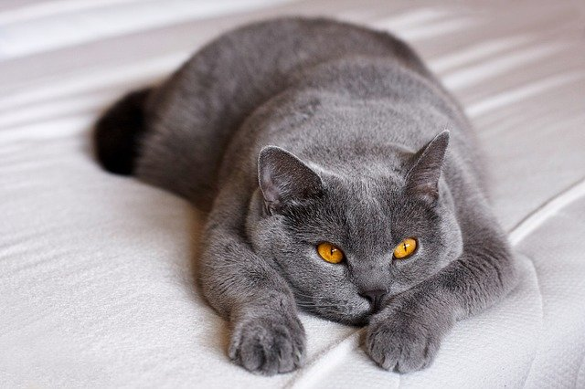

Persia

Jenis kucing ini menjadi salah satu ras kucing yang paling populer. Kucing persia memiliki kepala dan dahi yang bulat lebar dan telinga kecil yang ujungnya membulat. Bentuk ekornya pun pendek dan kaki yang pendek.
Maine Coon

Maine Coon merupakan jenis kucing paling besar dari semua jenis Kucing Domestik. Rata-rata berat Kucing Maine Coon mencapai 15 kilogram.Kucing jenis ini memiliki karakteristik bulu yang tebal dan halus, mata besar, dan cakar yang besar.
Anggora

Bulu yang lembut, panjang, dan lebat mungkin membuat Anggora sulit dibedakan dari Kucing Persia. Jika Kucing persia berbadan gemuk, lain halnya dengan Kucing Anggora yang cenderung memiliki ukuran bentuk tubuh yang lebih kurus.
British Shorthair

Kucing British Shorthair adalah jenis kucing yang ideal sebagai hewan peliharaan karena bentuk tubuhnya yang sempurna. Kucing jenis ini memiliki bulu yang khas dan halus, mata yang besar dan kepala yang bulat.